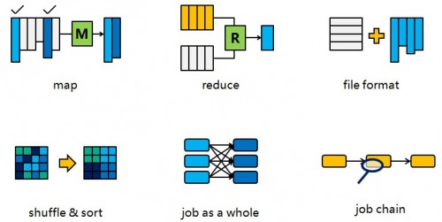
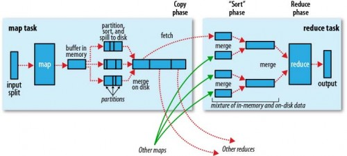
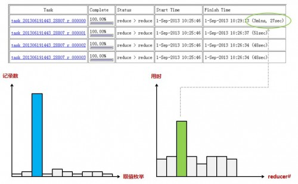
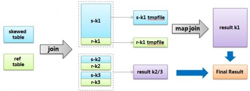

深入浅出数据仓库中SQL性能优化之Hive篇
一个Hive查询生成多个Map Reduce Job，一个Map Reduce Job又有Map，Reduce，Spill，Shuffle，Sort等多个阶段，所以针对Hive查询的优化可以大致分为针对MR中单个步骤的优化（其中又会有细分），针对MR全局的优化，和针对整个查询（多MR Job）的优化，下文会分别阐述。

在开始之前，先把MR的流程图帖出来（摘自Hadoop权威指南），方便后面对照。另外要说明的是，这个优化只是针对Hive 0.9版本，而不是后来Hortonwork发起Stinger项目之后的版本。相对应的Hadoop版本是1.x而非2.x。

Map阶段的优化(Map phase)
Map阶段的优化，主要是确定合适的Map数。那么首先要了解Map数的计算公式：
- num_Map_tasks = max[${Mapred.min.split.size}，
- min(${dfs.block.size}， ${Mapred.max.split.size})]
- Mapred.min.split.size指的是数据的最小分割单元大小。
- Mapred.max.split.size指的是数据的最大分割单元大小。
- dfs.block.size指的是HDFS设置的数据块大小。
一般来说dfs.block.size这个值是一个已经指定好的值，而且这个参数Hive是识别不到的：
- Hive> set dfs.block.size;
- dfs.block.size is undefined
所以实际上只有Mapred.min.split.size和Mapred.max.split.size这两个参数（本节内容后面就以min和max指代这两个参数）来决定Map数量。在Hive中min的默认值是1B，max的默认值是256MB：
- Hive> set Mapred.min.split。size;
- Mapred.min.split.size=1
- Hive> set Mapred.max.split。size;
- Mapred.max.split.size=256000000
所以如果不做修改的话，就是1个Map task处理256MB数据，我们就以调整max为主。通过调整max可以起到调整Map数的作用，减小max可以增加Map数，增大max可以减少Map数。需要提醒的是，直接调整Mapred.Map.tasks这个参数是没有效果的。
调整大小的时机根据查询的不同而不同，总的来讲可以通过观察Map task的完成时间来确定是否需要增加Map资源。如果Map task的完成时间都是接近1分钟，甚至几分钟了，那么往往增加Map数量，使得每个Map task处理的数据量减少，能够让Map task更快完成；而如果Map task的运行时间已经很少了，比如10-20秒，这个时候增加Map不太可能让Map task更快完成，反而可能因为Map需要的初始化时间反而让Job总体速度变慢，这个时候反而需要考虑是否可以把Map的数量减少，这样可以节省更多资源给其他Job。
Reduce阶段的优化(Reduce phase)
这里说的Reduce阶段，是指前面流程图中的Reduce phase（实际的Reduce计算）而非图中整个Reduce task。Reduce阶段优化的主要工作也是选择合适的Reduce task数量，跟上面的Map优化类似。
与Map优化不同的是，Reduce优化时，可以直接设置Mapred。Reduce。tasks参数从而直接指定Reduce的个数。当然直接指定Reduce个数虽然比较方便，但是不利于自动扩展。Reduce数的设置虽然相较Map更灵活，但是也可以像Map一样设定一个自动生成规则，这样运行定时Job的时候就不用担心原来设置的固定Reduce数会由于数据量的变化而不合适。
Hive估算Reduce数量的时候，使用的是下面的公式：
- num_Reduce_tasks = min[${Hive.exec.Reducers.max}，
- (${input.size} / ${ Hive.exec.Reducers.bytes.per.Reducer})]
也就是说，根据输入的数据量大小来决定Reduce的个数，默认Hive.exec.Reducers.bytes.per.Reducer为1G，而且Reduce个数不能超过一个上限参数值，这个参数的默认取值为999。所以我们可以调整Hive.exec.Reducers.bytes.per.Reducer来设置Reduce个数。
设置Reduce数同样也是根据运行时间作为参考调整，并且可以根据特定的业务需求、工作负载类型总结出经验，所以不再赘述。
Map与Reduce之间的优化(Spill， copy， Sort phase)
Map phase和Reduce phase之间主要有3道工序。首先要把Map输出的结果进行排序后做成中间文件，其次这个中间文件就能分发到各个Reduce，最后Reduce端在执行Reduce phase之前把收集到的排序子文件合并成一个排序文件。这个部分可以调的参数挺多，但是一般都是不要调整的，不必重点关注。
Spill 与 Sort
在Spill阶段，由于内存不够，数据可能没办法在内存中一次性排序完成，那么就只能把局部排序的文件先保存到磁盘上，这个动作叫Spill，然后Spill出来的多个文件可以在最后进行merge。如果发生Spill，可以通过设置io.Sort.mb来增大Mapper输出buffer的大小，避免Spill的发生。另外合并时可以通过设置io.Sort.factor来使得一次性能够合并更多的数据。调试参数的时候，一个要看Spill的时间成本，一个要看merge的时间成本，还需要注意不要撑爆内存（io.Sort.mb是算在Map的内存里面的）。Reduce端的merge也是一样可以用io.Sort.factor。一般情况下这两个参数很少需要调整，除非很明确知道这个地方是瓶颈。
Copy
copy阶段是把文件从Map端copy到Reduce端。默认情况下在5%的Map完成的情况下Reduce就开始启动copy，这个有时候是很浪费资源的，因为Reduce一旦启动就被占用，一直等到Map全部完成，收集到所有数据才可以进行后面的动作，所以我们可以等比较多的Map完成之后再启动Reduce流程，这个比例可以通Mapred.Reduce.slowstart.completed.Maps去调整，他的默认值就是5%。如果觉得这么做会减慢Reduce端copy的进度，可以把copy过程的线程增大。tasktracker.http.threads可以决定作为server端的Map用于提供数据传输服务的线程，Mapred.Reduce.parallel.copies可以决定作为client端的Reduce同时从Map端拉取数据的并行度（一次同时从多少个Map拉数据），修改参数的时候这两个注意协调一下，server端能处理client端的请求即可。
文件格式的优化
文件格式方面有两个问题，一个是给输入和输出选择合适的文件格式，另一个则是小文件问题。小文件问题在目前的Hive环境下已经得到了比较好的解决，Hive的默认配置中就可以在小文件输入时自动把多个文件合并给1个Map处理，输出时如果文件很小也会进行一轮单独的合并，所以这里就不专门讨论了。相关的参数可以在这里找到。
关于文件格式，Hive0.9版本有3种，textfile，sequencefile和rcfile。总体上来说，rcfile的压缩比例和查询时间稍好一点，所以推荐使用。
关于使用方法，可以在建表结构时可以指定格式，然后指定压缩插入：
- create table rc_file_test( col int ) stored as rcfile;
- set Hive.exec.compress.output = true;
- insert overwrite table rc_file_test
- select * from source_table;
另外时也可以指定输出格式，也可以通过Hive。default。fileformat来设定输出格式，适用于create table as select的情况：
- set Hive.default.fileformat = SequenceFile;
- set Hive.exec.compress.output = true;
- /*对于sequencefile，有record和block两种压缩方式可选，block压缩比更高*/
- set Mapred.output.compression.type = BLOCK;
- create table seq_file_test
- as select * from source_table;
上面的文件格式转换，其实是由Hive完成的（也就是插入动作）。但是也可以由外部直接导入纯文本（可以按照这里的做法预先压缩），或者是由MapReduce Job生成的数据。
值得注意的是，Hive读取sequencefile的时候，是把key忽略的，也就是直接读value并且按照指定分隔符分隔字段。但是如果Hive的数据来源是从mr生成的，那么写sequencefile的时候，key和value都是有意义的，key不能被忽略，而是应该当成第一个字段。为了解决这种不匹配的情况，有两种办法。一种是要求凡是结果会给Hive用的mr Job输出value的时候带上key。但是这样的话对于开发是一个负担，读写数据的时候都要注意这个情况。所以更好的方法是第二种，也就是把这个源自于Hive的问题交给Hive解决，写一个InputFormat包装一下，把value输出加上key即可。以下是核心代码，修改了RecordReader的next方法：
- public synchronized boolean next(K key， V value) throws IOException
- {
- Text tKey = (Text) key;
- Text tValue = (Text) value;
- if (!super.next(innerKey， innerValue))
- return false;
- Text inner_key = (Text) innerKey; //在构造函数中用createKey()生成
- Text inner_value = (Text) innerValue; //在构造函数中用createValue()生成
- tKey.set(inner_key);
- tValue.set(inner_key.toString() + '\t' + inner_value.toString()); // 分隔符注意自己定义
- return true;
- }
Job整体优化
有一些问题必须从Job的整体角度去观察。这里讨论几个问题：Job执行模式（本地执行v.s.分布式执行）、JVM重用、索引、Join算法、数据倾斜。
Job执行模式
Hadoop的Map Reduce Job可以有3种模式执行，即本地模式，伪分布式，还有真正的分布式。本地模式和伪分布式都是在最初学习Hadoop的时候往往被说成是做单机开发的时候用到。但是实际上对于处理数据量非常小的Job，直接启动分布式Job会消耗大量资源，而真正执行计算的时间反而非常少。这个时候就应该使用本地模式执行mr Job，这样执行的时候不会启动分布式Job，执行速度就会快很多。比如一般来说启动分布式Job，无论多小的数据量，执行时间一般不会少于20s，而使用本地mr模式，10秒左右就能出结果。
设置执行模式的主要参数有三个，一个是Hive.exec.mode.local.auto，把他设为true就能够自动开启local mr模式。但是这还不足以启动local mr，输入的文件数量和数据量大小必须要控制，这两个参数分别为Hive.exec.mode.local.auto.tasks.max和Hive.exec.mode.local.auto.inputbytes.max，默认值分别为4和128MB，即默认情况下，Map处理的文件数不超过4个并且总大小小于128MB就启用local mr模式。
JVM重用
正常情况下，MapReduce启动的JVM在完成一个task之后就退出了，但是如果任务花费时间很短，又要多次启动JVM的情况下（比如对很大数据量进行计数操作），JVM的启动时间就会变成一个比较大的overhead。在这种情况下，可以使用jvm重用的参数：
- set Mapred.Job.reuse.jvm.num.tasks = 5;
他的作用是让一个jvm运行多次任务之后再退出。这样一来也能节约不少JVM启动时间。
索引
总体上来说，Hive的索引目前还是一个不太适合使用的东西，这里只是考虑到叙述完整性，对其进行基本的介绍。
Hive中的索引架构开放了一个接口，允许你根据这个接口去实现自己的索引。目前Hive自己有一个参考的索引实现（CompactIndex），后来在0.8版本中又加入位图索引。这里就讲讲CompactIndex。
CompactIndex的实现原理类似一个lookup table，而非传统数据库中的B树。如果你对table A的col1做了索引，索引文件本身就是一个table，这个table会有3列，分别是col1的枚举值，每个值对应的数据文件位置，以及在这个文件位置中的偏移量。通过这种方式，可以减少你查询的数据量（偏移量可以告诉你从哪个位置开始找，自然只需要定位到相应的block），起到减少资源消耗的作用。但是就其性能来说，并没有很大的改善，很可能还不如构建索引需要花的时间。所以在集群资源充足的情况下，没有太大必要考虑索引。
CompactIndex的还有一个缺点就是使用起来不友好，索引建完之后，使用之前还需要根据查询条件做一个同样剪裁才能使用，索引的内部结构完全暴露，而且还要花费额外的时间。具体看看下面的使用方法就了解了：
- /*在index_test_table表的id字段上创建索引*/
- create index idx on table index_test_table(id)
- as 'org.apache.Hadoop.Hive.ql.index.compact.CompactIndexHandler' with deferred rebuild;
- alter index idx on index_test_table rebuild;
- /*索引的剪裁。找到上面建的索引表，根据你最终要用的查询条件剪裁一下。*/
- /*如果你想跟RDBMS一样建完索引就用，那是不行的，会直接报错，这也是其麻烦的地方*/
- create table my_index
- as select _bucketname， `_offsets`
- from default__index_test_table_idx__ where id = 10;
- /*现在可以用索引了，注意最终查询条件跟上面的剪裁条件一致*/
- set Hive.index.compact.file = /user/Hive/warehouse/my_index;
- set Hive.input.format = org.apache.Hadoop.Hive.ql.index.compact.HiveCompactIndexInputFormat;
- select count(*) from index_test_table where id = 10;
Join算法
处理分布式join，一般有两种方法:
- replication join：把其中一个表复制到所有节点，这样另一个表在每个节点上面的分片就可以跟这个完整的表join了；
- repartition join：把两份数据按照join key进行hash重分布，让每个节点处理hash值相同的join key数据，也就是做局部的join。
这两种方式在M/R Job中分别对应了Map side join和Reduce side join。在一些MPP DB中，数据可以按照某列字段预先进行hash分布，这样在跟这个表以这个字段为join key进行join的时候，该表肯定不需要做数据重分布了，这种功能是以HDFS作为底层文件系统的Hive所没有的。
在默认情况下，Hive的join策略是进行Reduce side join。当两个表中有一个是小表的时候，就可以考虑用Map join了，因为小表复制的代价会好过大表Shuffle的代价。使用Map join的配置方法有两种，一种直接在sql中写hint，语法是/*+MapJOIN (tbl)*/，其中tbl就是你想要做replication的表。另一种方法是设置Hive.auto.convert.join = true，这样Hive会自动判断当前的join操作是否合适做Map join，主要是找join的两个表中有没有小表。至于多大的表算小表，则是由Hive.smalltable.filesize决定，默认25MB。
但是有的时候，没有一个表足够小到能够放进内存，但是还是想用Map join怎么办？这个时候就要用到bucket Map join。其方法是两个join表在join key上都做hash bucket，并且把你打算复制的那个（相对）小表的bucket数设置为大表的倍数。这样数据就会按照join key做hash bucket。小表依然复制到所有节点，Map join的时候，小表的每一组bucket加载成hashtable，与对应的一个大表bucket做局部join，这样每次只需要加载部分hashtable就可以了。
然后在两个表的join key都具有唯一性的时候（也就是可做主键），还可以进一步做Sort merge bucket Map join。做法还是两边要做hash bucket，而且每个bucket内部要进行排序。这样一来当两边bucket要做局部join的时候，只需要用类似merge Sort算法中的merge操作一样把两个bucket顺序遍历一遍即可完成，这样甚至都不用把一个bucket完整的加载成hashtable，这对性能的提升会有很大帮助。
然后这里以一个完整的实验说明这几种join算法如何操作。
首先建表要带上bucket：
- create table Map_join_test(id int)
- clustered by (id) Sorted by (id) into 32 buckets
- stored as textfile;
然后插入我们准备好的800万行数据，注意要强制划分成bucket（也就是用Reduce划分hash值相同的数据到相同的文件）：
- set Hive.enforce.bucketing = true;
- insert overwrite table Map_join_test
- select * from Map_join_source_data;
这样这个表就有了800万id值（且里面没有重复值，所以可以做Sort merge），占用80MB左右。
接下来我们就可以一一尝试Map join的算法了。首先是普通的Map join：
- select /*+Mapjoin(a) */count(*)
- from Map_join_test a
- join Map_join_test b on a.id = b.id;
然后就会看到分发hash table的过程：
- 2013-08-31 09:08:43 Starting to launch local task to process Map join; maximum memory = 1004929024
- 2013-08-31 09:08:45 Processing rows: 200000 Hashtable size: 199999 Memory usage: 38823016 rate: 0.039
- 2013-08-31 09:08:46 Processing rows: 300000 Hashtable size: 299999 Memory usage: 56166968 rate: 0.056
- ……
- 2013-08-31 09:12:39 Processing rows: 4900000 Hashtable size: 4899999 Memory usage: 896968104 rate: 0.893
- 2013-08-31 09:12:47 Processing rows: 5000000 Hashtable size: 4999999 Memory usage: 922733048 rate: 0.918
- Execution failed with exit status: 2
- Obtaining error information
- Task failed!
- Task ID:
- Stage-4
不幸的是，居然内存不够了，直接做Map join失败了。但是80MB的大小为何用1G的heap size都放不下？观察整个过程就会发现，平均一条记录需要用到200字节的存储空间，这个overhead太大了，对于Map join的小表size一定要好好评估，如果有几十万记录数就要小心了。虽然不太清楚其中的构造原理，但是在互联网上也能找到其他的例证，比如这里和这里，平均一行500字节左右。这个明显比一般的表一行占用的数据量要大。不过Hive也在做这方面的改进，争取缩小hash table，比如Hive-6430。
所以接下来我们就用bucket Map join，之前分的bucket就派上用处了。只需要在上述sql的前面加上如下的设置：
- set Hive。optimize。bucketMapjoin = true;
然后还是会看到hash table分发：
- 2013-08-31 09:20:39 Starting to launch local task to process Map join; maximum memory = 1004929024
- 2013-08-31 09:20:41 Processing rows: 200000 Hashtable size: 199999 Memory usage: 38844832 rate: 0.039
- 2013-08-31 09:20:42 Processing rows: 275567 Hashtable size: 275567 Memory usage: 51873632 rate: 0.052
- 2013-08-31 09:20:42 Dump the hashtable into file: file:/tmp/Hadoop/Hive_2013-08-31_21-20-37_444_1135806892100127714/-local-10003/HashTable-Stage-1/MapJoin-a-10-000000_0。hashtable
- 2013-08-31 09:20:46 Upload 1 File to: file:/tmp/Hadoop/Hive_2013-08-31_21-20-37_444_1135806892100127714/-local-10003/HashTable-Stage-1/MapJoin-a-10-000000_0。hashtable File size: 11022975
- 2013-08-31 09:20:47 Processing rows: 300000 Hashtable size: 24432 Memory usage: 8470976 rate: 0.008
- 2013-08-31 09:20:47 Processing rows: 400000 Hashtable size: 124432 Memory usage: 25368080 rate: 0.025
- 2013-08-31 09:20:48 Processing rows: 500000 Hashtable size: 224432 Memory usage: 42968080 rate: 0.043
- 2013-08-31 09:20:49 Processing rows: 551527 Hashtable size: 275960 Memory usage: 52022488 rate: 0.052
- 2013-08-31 09:20:49 Dump the hashtable into file: file:/tmp/Hadoop/Hive_2013-08-31_21-20-37_444_1135806892100127714/-local-10003/HashTable-Stage-1/MapJoin-a-10-000001_0。hashtable
- ……
这次就会看到每次构建完一个hash table（也就是所对应的对应一个bucket），会把这个hash table写入文件，重新构建新的hash table。这样一来由于每个hash table的量比较小，也就不会有内存不足的问题，整个sql也能成功运行。不过光光是这个复制动作就要花去3分半的时间，所以如果整个Job本来就花不了多少时间的，那这个时间就不可小视。
最后我们试试Sort merge bucket Map join，在bucket Map join的基础上加上下面的设置即可：
- set Hive.optimize.bucketMapjoin.Sortedmerge = true;
- set Hive.input.format = org.apache.Hadoop.Hive.ql.io.BucketizedHiveInputFormat;
Sort merge bucket Map join是不会产生hash table复制的步骤的，直接开始做实际Map端join操作了，数据在join的时候边做边读。跳过复制的步骤，外加join算法的改进，使得Sort merge bucket Map join的效率要明显好于bucket Map join。
关于join的算法虽然有这么些选择，但是个人觉得，对于日常使用，掌握默认的Reduce join和普通的（无bucket）Map join已经能解决大多数问题。如果小表不能完全放内存，但是小表相对大表的size量级差别也非常大的时候也可以试试bucket Map join，不过其hash table分发的过程会浪费不少时间，需要评估下是否能够比Reduce join更高效。而Sort merge bucket Map join虽然性能不错，但是把数据做成bucket本身也需要时间，另外其发动条件比较特殊，就是两边join key必须都唯一（很多介绍资料中都不提这一点。强调下必须都是唯一，哪怕只有一个表不唯一，出来的结果也是错的。当然，其实这点完全可以根据其算法原理推敲出来）。这样的场景相对比较少见，“用户基本表 join 用户扩展表”以及“用户今天的数据快照 join 用户昨天的数据快照”这类场景可能比较合适。
这里顺便说个题外话，在数据仓库中，小表往往是维度表，而小表Map join这件事情其实用udf代替还会更快，因为不用单独启动一轮Job，所以这也是一种可选方案。当然前提条件是维度表是固定的自然属性（比如日期），只增加不修改（比如网站的页面编号）的情况也可以考虑。如果维度有更新，要做缓慢变化维的，当然还是维表好维护。至于维表原本的一个主要用途OLAP，以Hive目前的性能是没法实现的，也就不需要多虑了。
数据倾斜
所谓数据倾斜，说的是由于数据分布不均匀，个别值集中占据大部分数据量，加上Hadoop的计算模式，导致计算资源不均匀引起性能下降。下图就是一个例子：

还是拿网站的访问日志说事吧。假设网站访问日志中会记录用户的user_id，并且对于注册用户使用其用户表的user_id，对于非注册用户使用一个user_id=0代表。那么鉴于大多数用户是非注册用户（只看不写），所以user_id=0占据了绝大多数。而如果进行计算的时候如果以user_id作为group by的维度或者是join key，那么个别Reduce会收到比其他Reduce多得多的数据——因为它要接收所有user_id=0的记录进行处理，使得其处理效果会非常差，其他Reduce都跑完很久了它还在运行。
倾斜分成group by造成的倾斜和join造成的倾斜，需要分开看。
group by造成的倾斜有两个参数可以解决，一个是Hive.Map.aggr，默认值已经为true，意思是会做Map端的combiner。所以如果你的group by查询只是做count(*)的话，其实是看不出倾斜效果的，但是如果你做的是count(distinct)，那么还是会看出一点倾斜效果。另一个参数是Hive.groupby. skewindata。这个参数的意思是做Reduce操作的时候，拿到的key并不是所有相同值给同一个Reduce，而是随机分发，然后Reduce做聚合，做完之后再做一轮MR，拿前面聚合过的数据再算结果。所以这个参数其实跟Hive.Map.aggr做的是类似的事情，只是拿到Reduce端来做，而且要额外启动一轮Job，所以其实不怎么推荐用，效果不明显。
如果说要改写SQL来优化的话，可以按照下面这么做：
- /*改写前*/
- select a， count(distinct b) as c from tbl group by a;
- /*改写后*/
- select a， count(*) as c
- from (select distinct a， b from tbl) group by a;
join造成的倾斜，就比如上面描述的网站访问日志和用户表两个表join：
- select a.* from logs a join users b on a。user_id = b.user_id;
Hive给出的解决方案叫skew join，其原理把这种user_id = 0的特殊值先不在Reduce端计算掉，而是先写入hdfs，然后启动一轮Map join专门做这个特殊值的计算，期望能提高计算这部分值的处理速度。当然你要告诉Hive这个join是个skew join，即：
- set Hive.optimize.skewjoin = true;
还有要告诉Hive如何判断特殊值，根据Hive.skewjoin.key设置的数量Hive可以知道，比如默认值是100000，那么超过100000条记录的值就是特殊值。
skew join的流程可以用下图描述：

另外对于特殊值的处理往往跟业务有关系，所以也可以从业务角度重写sql解决。比如前面这种倾斜join，可以把特殊值隔离开来（从业务角度说，users表应该不存在user_id
= 0的情况，但是这里还是假设有这个值，使得这个写法更加具有通用性）：
- select a.* from
- (
- select a.*
- from (select * from logs where user_id = 0) a
- join (select * from users where user_id = 0) b
- on a。user_id = b。user_id
- union all
- select a.*
- from logs a join users b
- on a。user_id <> 0 and a。user_id = b.user_id
- )t;
数据倾斜不仅仅是Hive的问题，其实是share nothing架构下必然会碰到的数据分布问题，对此学界也有专门的研究，比如skewtune。
SQL整体优化
前面对于单个Job如何做优化已经做过详细讨论，但是Hive查询会生成多个Job，针对多个Job，有什么地方需要优化？
Job间并行
首先，在Hive生成的多个Job中，在有些情况下Job之间是可以并行的，典型的就是子查询。当需要执行多个子查询union all或者join操作的时候，Job间并行就可以使用了。比如下面的代码就是一个可以并行的场景示意：
- select * from
- (
- select count(*) from logs
- where log_date = 20130801 and item_id = 1
- union all
- select count(*) from logs
- where log_date = 20130802 and item_id = 2
- union all
- select count(*) from logs
- where log_date = 20130803 and item_id = 3
- )t
设置Job间并行的参数是Hive.exec.parallel，将其设为true即可。默认的并行度为8，也就是最多允许sql中8个Job并行。如果想要更高的并行度，可以通过Hive.exec.parallel. thread.number参数进行设置，但要避免设置过大而占用过多资源。
减少Job数
另外在实际开发过程中也发现，一些实现思路会导致生成多余的Job而显得不够高效。比如这个需求：查询某网站日志中访问过页面a和页面b的用户数量。低效的思路是面向明细的，先取出看过页面a的用户，再取出看过页面b的用户，然后取交集，代码如下：
- select count(*)
- from
- (select distinct user_id
- from logs where page_name = ‘a’) a
- join
- (select distinct user_id
- from logs where blog_owner = ‘b’) b
- on a.user_id = b.user_id;
这样一来，就要产生2个求子查询的Job，一个用于关联的Job，还有一个计数的Job，一共有4个Job。
但是我们直接用面向统计的方法去计算的话（也就是用group by替代join），则会更加符合M/R的模式，而且生成了一个完全不带子查询的sql，只需要用一个Job就能跑完：
- select count(*)
- from logs group by user_id
- having (count(case when page_name = ‘a’ then 1 end) > 0
- and count(case when page_name = ‘b’ then 1 end) > 0)
第一种查询方法符合思考问题的直觉，是工程师和分析师在实际查数据中最先想到的写法，但是如果在目前Hive的query planner不是那么智能的情况下，想要更加快速的跑出结果，懂一点工具的内部机理也是必须的。（作者：孙逸 / 审校：刘亚琼）
作者介绍：孙逸，zamplus，数据仓库工程师。从事数据仓库平台建设与数据产品开发，热衷于研究大数据相关的计算技术，并应用于实践之中，让数据产生真正价值。
本文为CSDN原创文章，未经允许不得转载，如需转载请联系market#csdn.net(#换成@)
- 顶
- 40
- 踩
- 0
- CSDN官方微信
- 扫描二维码,向CSDN吐槽
- 微信号：CSDNnews
微博关注

已有26条评论
还可以再输入500个字